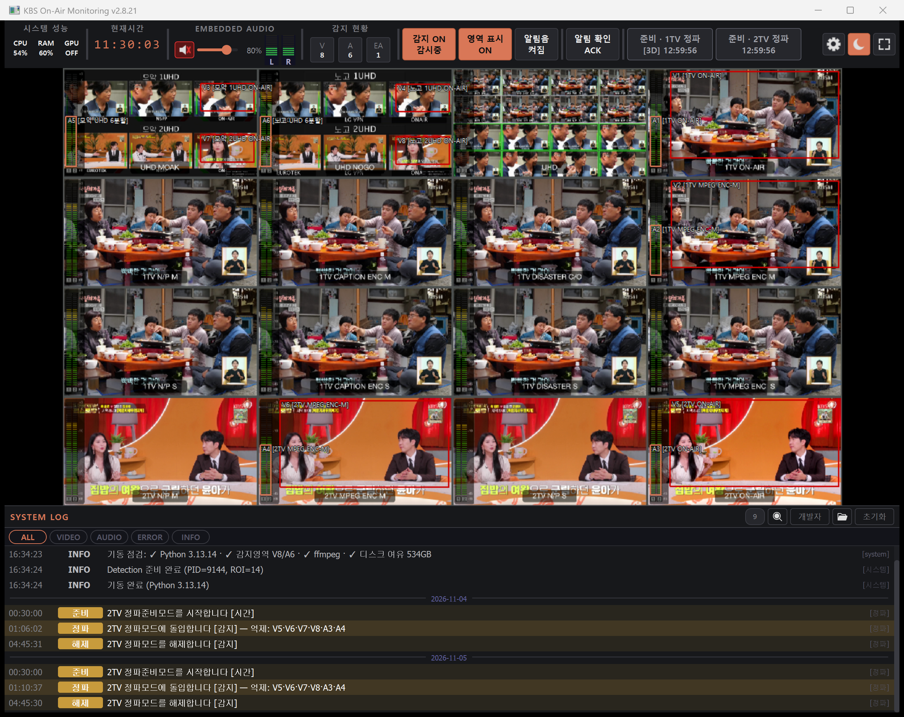
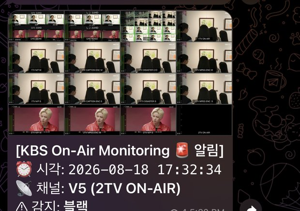
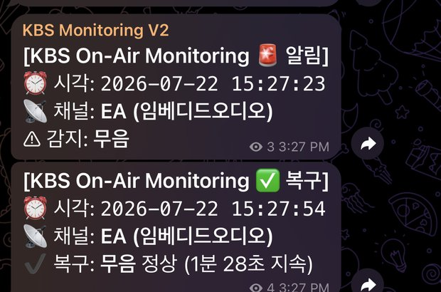
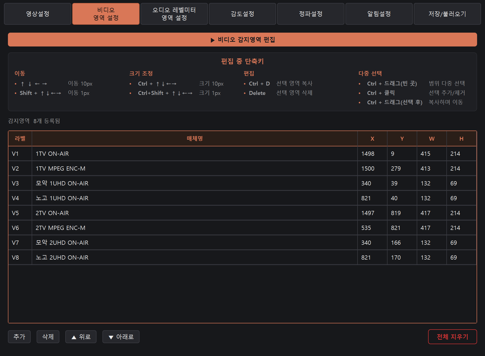
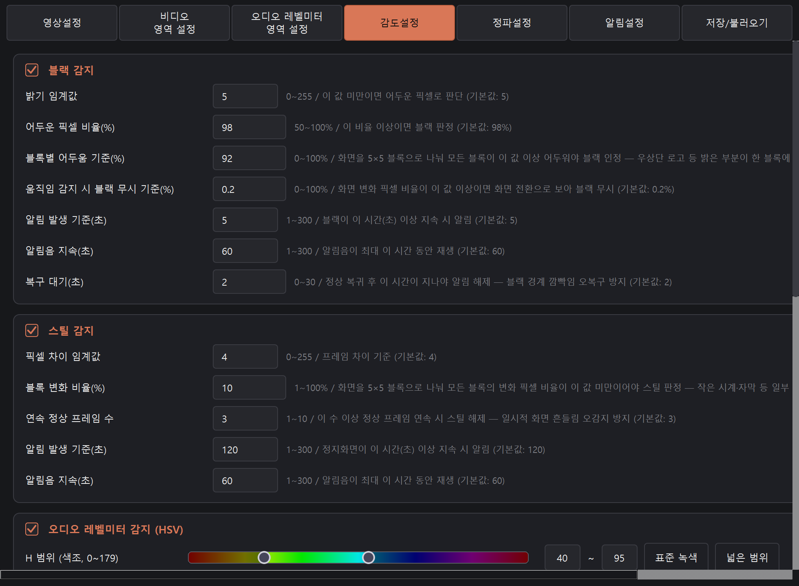
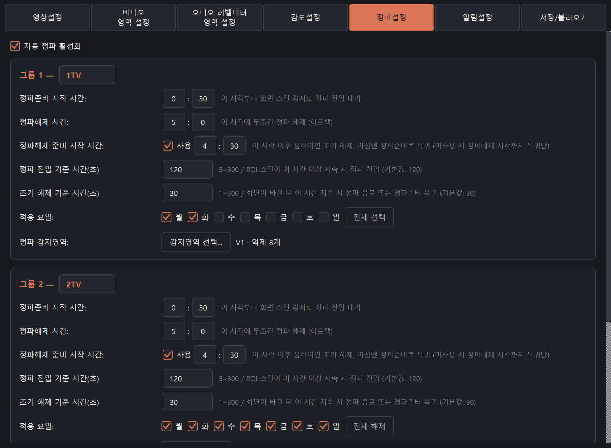
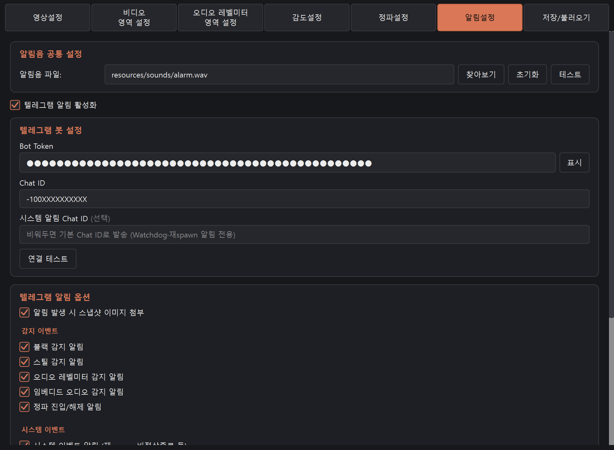
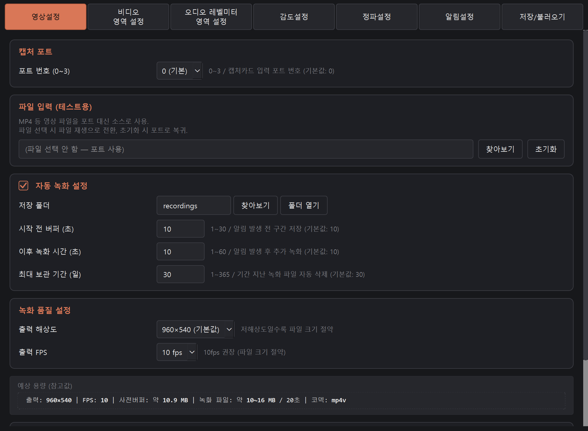

KBS Monitoring v2 사용안내
16채널 방송 감시 프로그램을 쓰는 근무자와 설치·관리 담당자를 위한 안내서입니다. A부는 "지금 화면에 이게 떴는데 뭘 하지?"를 찾는 순서로, B부는 설치하고 설정하는 순서로 썼습니다.
0이 프로그램은
근무자 · 처음 읽는 분방송 화면 16개와 소리를 0.2초마다 자동으로 살펴보다가, 이상이 생기면 바로 알려 주고 그 순간 앞뒤 영상을 녹화해 두는 프로그램입니다. 사람이 화면을 계속 지켜보지 않아도 사고를 놓치지 않게 돕습니다.
무엇을 잡나요 (4가지)
BLACK 블랙
화면이 새까맣게 꺼진 상태가 이어질 때
STILL 정지화면(스틸)
화면이 멈춰서 움직이지 않을 때
AUDIO 오디오 레벨미터
화면 속 오디오 미터의 초록 막대가 사라졌을 때(소리 끊김)
EMBED 임베디드 오디오
캡처보드로 들어오는 실제 소리가 무음일 때
어떻게 알려 주나요 (3가지)
- 화면 — 이상이 난 채널의 감지영역이 빨갛게 채워지며 깜빡입니다.
- 소리 — 경보음이 반복해서 울립니다.
- 텔레그램 — 채널 화면 사진과 함께 휴대폰으로 메시지가 옵니다. 정상으로 돌아오면 "복구" 메시지와 지속 시간도 옵니다.
혼자서도 버팁니다
무인 운영을 위해 프로그램이 스스로 고장을 감시합니다. 감지 부분이 멈추면 10초 안에 다시 띄우고,
캡처보드 신호가 끊겨 화면이 까맣게 굳으면 장치만 다시 연결합니다. 이런 일이 생기면 [SYSTEM]으로 시작하는
텔레그램이 따로 옵니다(4장).
1화면 보는 법
근무자
1 2 3 4 5 6 7| 번호 | 이름 | 보는 법 |
|---|---|---|
| 1 | 시스템 성능 · 현재시간 · 방송 소리 | CPU·RAM 사용률(10초마다), 지금 시각. 스피커 버튼과 막대는 PC 스피커로 듣는 방송 소리의 음소거·볼륨이고, 옆의 L/R 미터는 들어오는 소리 크기입니다. 음소거해도 무음 감시는 계속됩니다. |
| 2 | 감지 현황 | V = 영상 감지영역 개수, A = 오디오 레벨미터 감지영역 개수, EA = 임베디드 오디오 감시(1=켜짐). 경보 중인 종류는 빨갛게 바뀝니다. |
| 3 | 제어 버튼 | 감지 ON 전체 감시 켜기/끄기 · 영역 표시 감지영역 테두리 보이기 · 알림음 경보음 켜기/끄기 · 알림 확인 ACK 울리는 경보 멈추기(2장) |
| 4 | 정파 버튼(그룹별) | 지금 정파 상태와 다음 단계까지 남은 시간. 누르면 상태를 손으로 바꿉니다(3장). |
| 5 | 사용안내 · 설정 · 주간/야간 · 전체화면 | ? 이 안내서 열기 · 톱니바퀴 = 설정창 · 달 = 밝은/어두운 화면 · 네모 = 전체화면(F11) |
| 6 | 영상 (16채널) | 빨간 테두리 = 영상 감지영역, 주황 테두리 = 오디오 레벨미터 감지영역입니다(영역 표시 ON일 때). 경보가 나면 그 영역이 채워지며 깜빡입니다. |
| 7 | 시스템 로그 | 무슨 일이 언제 있었는지 위에서부터 시간순으로 쌓입니다. 아래 색 표를 보세요. |
로그 색 읽는 법
| 표시 | 뜻 |
|---|---|
| BLACK | 블랙 감지 |
| STILL | 정지화면 감지 |
| AUDIO | 오디오 레벨미터 감지 |
| EMBED | 임베디드 오디오 무음 |
| 복구 | 정상으로 돌아옴. 배지 테두리 색이 어떤 경보가 풀렸는지 알려 줍니다(빨강=블랙, 보라=스틸, 초록=레벨미터, 파랑=임베디드). |
| 준비 정파 해제 | 정파 상태 바뀜 |
| ERROR | 프로그램 쪽 장애(장치 끊김, 녹화 실패, 텔레그램 실패 등) |
로그 위쪽 ALL · VIDEO · AUDIO · ERROR · INFO로 종류별로 걸러 볼 수 있습니다. 글이 잘리면 마우스를 올리면 전체가 보입니다. 화면엔 최근 500줄까지만 남고, 파일에는 전부 남습니다(5장).
2경보가 울리면
근무자- 어느 채널인지 봅니다. 영상에서 깜빡이는 영역과 로그 맨 아래(가장 최근) 줄을 확인합니다. 예:
V3 (모악 1UHD ON-AIR) still - 실제 방송을 확인합니다. 수신 모니터·송출 장비에서 진짜 사고인지 봅니다. 프로그램은 "화면이 이렇게 보인다"만 알 수 있습니다.
- 알림 확인 ACK를 눌러 경보음을 멈춥니다. 깜빡임과 소리가 멈추고, 같은 이상이 계속돼도 다시 울리지 않습니다. 감시는 계속됩니다.
- 복구를 확인합니다. 정상으로 돌아오면 로그에 청록색 복구가 찍히고 텔레그램으로 지속 시간이 옵니다. 그 뒤 새 이상이 생기면 다시 정상적으로 울립니다.
- 필요하면 녹화 파일을 봅니다. 경보 순간 앞뒤가 자동 녹화돼 있습니다(5장).
언제 경보가 울리나요 (기본값)
아래 시간 동안 상태가 이어져야 울립니다. 짧은 깜빡임으로 울리지 않게 하기 위해서입니다. 국마다 설정이 다를 수 있습니다(설정 > 감도설정).
| 종류 | 울리는 조건 | 기본 지속 시간 |
|---|---|---|
| 블랙 | 감지영역의 거의 전부(98%)가 아주 어두움. 방송사 로고만 남은 검은 장면, 움직이는 자막은 블랙으로 치지 않습니다. | 5초 |
| 정지화면 | 감지영역을 25칸으로 나눠 모든 칸이 거의 안 움직임 | 120초 |
| 오디오 레벨미터 | 레벨미터 영역의 초록 막대가 거의 안 보임 | 60초 |
| 임베디드 오디오 | 들어오는 소리가 -50dB 이하 | 60초 |
텔레그램 예시


화면 전체가 한꺼번에 까매지면(입력 끊김 등) 채널마다 따로 보내지 않고 전체 화면 알림 1통과 복구 1통으로 묶어서 보냅니다.
3정파 시간대
근무자정파(방송 쉬는 시간) 동안 화면이 멈추거나 까만 것은 정상이므로, 그 채널의 경보를 잠시 꺼 둡니다. 그룹(예: 1TV, 2TV)마다 따로 움직입니다.
| 상태 | 언제 | 경보 |
|---|---|---|
| 대기 | 평소 | 모두 정상 작동 |
| 준비 | 설정한 정파준비 시각부터. 정해진 채널의 화면이 멈추길 기다립니다. | 그 그룹 정파 대상 채널의 정지화면 경보만 쉼. 블랙은 울림 |
| 정파 | 준비 중 정해진 채널 화면이 5초 이상 멈추면 자동 진입 | 그 그룹 정파 대상 채널의 경보·텔레그램 쉼 |
| 해제 | 해제준비 시각 뒤 화면이 30초 이상 움직이거나, 종료 시각이 되면 | 다시 정상 작동 |
- 해제준비 시각 전이라도 화면이 30초 넘게 다시 움직이면 "잘못 들어간 정파"로 보고 준비 상태로 되돌아가 다시 기다립니다.
- 임베디드 오디오 무음 경보는 정파 중에도 쉬지 않습니다(어느 그룹에도 속하지 않기 때문).
정파 텔레그램은 진입 1통, 해제 1통만 옵니다. 테스트 영상 때문에 진입·복귀가 짧게 반복되면 알림을 묶어 두었다가 안정되면 요약 1통을 보냅니다.
손으로 바꾸기
상단바 정파 버튼을 누르면 대기 → 준비 → 정파 → 대기 순서로 바뀝니다(소리 없음). 준비 상태에서 누르면, 정파 시간대 안이면 정파로, 밖이면 대기로 갑니다. 정파 시간대 밖에서 손으로 정파로 바꿔도 1초 뒤 자동으로 풀립니다.
[3D] 13:00:57 = 3일 13시간 0분 57초 뒤. "자동 정파준비"를 끈 국은 시간 대신 · 수동이 붙고, 버튼으로만 바뀝니다.4시스템 알림이 오면
근무자 · 관리 담당[SYSTEM]으로 시작하는 텔레그램은 방송이 아니라 프로그램 자신의 상태입니다. 대부분은 스스로 복구했다는 보고라 할 일이 없습니다.
"할 일"에 무언가 적힌 것만 챙기세요.
| 메시지(앞부분) | 뜻 | 할 일 |
|---|---|---|
기동 (Python 3.13.x) + 기동 점검: ✓ … | 프로그램이 켜짐(처음 켤 때, 예약 재시작, 스스로 다시 띄울 때 모두) | 없음. 둘째 줄에 ⚠ 또는 ✗가 있으면 그 항목 확인(아래 표) |
Detection 중단 감지 → 재spawn 중Detection 재spawn 완료 | 감지 부분이 죽어서 자동으로 다시 띄움 | 없음. 하루에 여러 번 오면 관리 담당에게 알림 |
Detection heartbeat stale … → kill 후 재spawn | 감지 부분이 10초 넘게 멈춰서 다시 띄움 | 없음(위와 같음) |
⚠ Detection이 기동 직후 N회 연속 중단 | 다시 띄워도 곧바로 죽음. 알림을 줄이고 재시도 간격을 늘림(최대 5분) | 현장 확인 — 캡처 장치 연결, 최근 설정 변경 |
Detection 안정화 | 위 상황이 풀려 60초 이상 정상 | 없음 |
⚠ UI 응답 없음 (N초) | 화면이 30초 넘게 멈춤. 감지·텔레그램은 계속 동작하지만 경보음·조작이 안 될 수 있음 | 화면 확인. 곧 UI 응답 회복이 안 오면 프로그램 재시작 |
⚠ UI 프로세스 손상 감지 | 화면 쪽이 내부 고장. 감시·텔레그램은 되지만 현장 경보음이 안 울림 | 즉시 프로그램 재시작. 관리 담당에게 알림(10장 Python 버전 확인) |
UI 비정상 종료 감지 | 프로그램 창이 꺼짐 | 다시 켜기(실행.bat) |
Watchdog 비정상 종료 감지 | 자동 복구를 맡는 부분이 꺼짐 | 프로그램 재시작 |
캡처 입력 신호 상실 감지 → 캡처 자동 재오픈 | 캡처보드 신호가 끊겨 화면 전체가 8초 넘게 까맣게 굳음. 장치를 다시 연결 중 | 없음. 곧 자동 복구 완료가 옵니다 |
캡처 입력 자동 복구 실패 … 입력 케이블/캡처보드 점검 필요 | 3번 다시 연결해도 신호가 안 들어옴 | 케이블·캡처보드·송출 신호 점검 |
오디오 입력 장치를 열 수 없습니다 | 소리 장치를 60초 넘게 못 열어 소리 감시가 멈춤(그동안 무음 경보가 울림) | 윈도우 마이크 권한 확인(10장), 캡처보드 연결 확인 |
오디오 입력 장치 복구 | 소리 감시 재개 | 없음 |
기동 점검 항목
| 항목 | ✗일 때 |
|---|---|
| Python | ⚠ 3.13이 아님 → 7장 1단계(python313_전환.bat) 다시 하기 |
| 설정 파일 | ✗ 없음 → 설정 백업 불러오기(7장 4단계) |
| 감지영역 | ✗ 영상 감지영역 0개 → 설정 백업 불러오기(7장 4단계) 또는 8장 |
| ffmpeg | 없음 → 녹화에 소리가 빠짐. install_ffmpeg.bat |
| 디스크 여유 | 10GB 미만 → 녹화 폴더 정리 |

UI 프로세스 손상 감지 알림(2026-08-11). 손상 1초 뒤 도착했습니다.5녹화 파일·로그 찾기
근무자 · 관리 담당녹화 파일
- 위치: 프로그램 폴더의
recordings(설정 > 영상설정 > 폴더 열기) - 경보 10초 전부터 10초 뒤까지(기본값) MP4로 저장. 녹화 중 경보가 또 나면 파일이 이어서 길어집니다.
- 파일 이름:
날짜_시각_채널_매체명_종류.mp4— 예:20261014_023924_563_V4_노고 1UHD ON-AIR_still.mp4 - 30일(기본값) 지난 파일은 자동으로 지웁니다. 남겨야 할 파일은 다른 곳에 복사해 두세요.
로그 파일
- 로그창 오른쪽 위 폴더 아이콘 =
logs폴더 열기 - 하루에 3개씩 생깁니다:
날짜_ui.txt(화면) ·날짜_detection.txt(감지) ·날짜_watchdog.txt(자동 복구·시스템 알림) - 로그창 초기화는 화면만 비웁니다. 파일은 그대로 남습니다.
6자주 묻는 질문
근무자경보가 났는데 텔레그램이 안 와요
정파 중인 채널이면 정상입니다(3장). 같은 채널은 60초 안에 다시 보내지 않습니다. 그 밖이면 로그의 ERROR 줄에서 텔레그램 실패를 확인하세요.
텔레그램이 같은 내용으로 두 번 온 것 같아요
지금 버전은 응답이 늦어도 다시 보내지 않게 고쳐져 있습니다. 계속 그러면 관리 담당에게 알려 주세요(재시작 전 옛 버전이 돌고 있을 수 있음).
설정을 바꿨는데 적용이 안 돼요
설정창은 저장 버튼이 따로 없고 바꾸는 즉시 저장·적용됩니다. 숫자 칸은 다른 칸을 누르거나 Enter를 쳐야 반영됩니다. 허용 범위를 벗어난 숫자는 "설정 저장 안 됨" 안내가 뜨고 저장되지 않습니다. 텔레그램 시스템 알림 설정만은 프로그램을 다시 켜야 적용됩니다.
프로그램을 껐다 켜도 되나요
네. 창의 X로 끄고 실행.bat으로 다시 켭니다. 켜는 동안(수 초) 감시가 비므로 정파 시간 등 여유 있을 때 하세요.
방송 소리를 끄면 무음 감시도 꺼지나요
아니요. 상단바 스피커 버튼은 PC 스피커로 나오는 소리만 끕니다. 무음 감시는 계속됩니다. 경보음은 알림음 버튼으로 따로 끕니다.
7설치와 첫 실행
설치·관리 담당준비물: Windows 10/11 PC, 인터넷, 영상 캡처보드, 이 프로그램 폴더(GitHub에서 받은 것).
python313_전환.bat더블클릭 — Python 3.13이 없으면 설치하고, 이 프로그램 전용 환경(.venv313폴더)을 만들어 필요한 부품을 넣습니다. 5~10분, 마지막에 "전환 완료!"가 보이면 성공.install_ffmpeg.bat더블클릭 — 녹화 영상에 소리를 넣는 도구. 없어도 돌지만 녹화에 소리가 빠집니다.실행.bat더블클릭 — 메인 창이 뜨면 성공. 로그에기동 점검: ✓ Python 3.13.x가 보이는지 확인하세요.- 설정 복원 — 새로 설치하면 감지영역 0개, 텔레그램 꺼짐으로 뜹니다(정상). 설정 > 저장/불러오기 탭에서 백업 파일을 불러오고, 알림설정 탭의 시스템 이벤트 알림 체크를 확인한 뒤 프로그램을 다시 켭니다. 다시 켜야 시스템 텔레그램이 나가기 시작합니다.
- (선택) 자동 시작 —
자동시작 등록.bat을 누르면 다음 로그인부터 자동으로 켜집니다. 해제는자동시작 해제.bat. PC가 자동 로그인되게 설정돼 있어야 합니다.
.venv313은 다운로드에 따라오지 않습니다. 빠뜨리면 Python 3.14로 돌게 되는데, 3.14에서는 며칠 뒤 화면 쪽이 고장 나 경보음·설정창이 먹통이 되는 사고가 6번 있었습니다. 3.13으로 고정한 뒤로는 재발하지 않았습니다.실행.bat으로 켜세요. 전용 환경 사용과 예약 재시작 후 자동으로 다시 켜기가 이 파일을 통해서만 됩니다. 두 번 실행하면 "이미 실행 중" 안내 후 두 번째는 꺼집니다.8감지영역 만들기
설치·관리 담당감지영역은 "화면의 이 부분을 감시하라"는 네모입니다. 영상용(V1, V2 …)과 오디오 레벨미터용(A1, A2 …)을 따로 만듭니다.
- 설정 > 비디오 영역 설정 탭에서 위쪽 ▶ 비디오 감지영역 편집을 누릅니다. 영상 위에서 편집 모드가 켜집니다(편집 중엔 감지가 잠시 멈춥니다).
- 빈 곳을 드래그하면 새 영역, 영역을 드래그하면 이동입니다.
- 표에서 매체명(예:
1TV ON-AIR)을 적습니다. 경보·텔레그램에 이 이름이 나옵니다. - 다 했으면 편집 버튼을 다시 누르거나 Esc. 편집을 끝내면 바로 저장되고 감지가 다시 시작됩니다.

편집 단축키
| 키 | 동작 |
|---|---|
| ←→↑↓ / Shift+화살표 | 이동 10px / 1px |
| Ctrl+화살표 / Ctrl+Shift+화살표 | 크기 10px / 1px |
| Ctrl+D · Delete | 복사 · 삭제 |
| Ctrl+드래그(빈 곳) · Ctrl+클릭 | 여러 개 선택 · 선택 추가/빼기 |
| Ctrl+드래그(선택 후) | 복사하며 이동 |
| Esc | 편집 끝내기 |
9설정창 한눈에
설치·관리 담당상단바 톱니바퀴로 엽니다. 탭 7개입니다. 저장 버튼이 따로 없고 바꾸는 즉시 저장·적용됩니다(숫자 칸은 다른 칸으로 넘어갈 때).
| 탭 | 여기서 하는 일 |
|---|---|
| 영상설정 | 캡처 포트 번호(영상이 안 나오면 0·1·2·3 차례로), 자동 녹화(사고 전·후 시간, 보관 일수, 해상도), 로그창 위치 |
| 비디오 영역 설정 | 영상 감지영역(8장) |
| 오디오 레벨미터 영역 설정 | 오디오 레벨미터 감지영역 |
| 감도설정 | 블랙·스틸·레벨미터·임베디드 오디오의 기준과 지속 시간, 감지 주기(0.1~1초) |
| 정파설정 | 그룹별 정파 시각·요일, 정파 진입을 알아챌 채널, 정파 중 경보를 쉴 채널, 정파 알림음 |
| 알림설정 | 경보음 파일, 텔레그램 봇·채팅 ID, 종류별 발송, 시스템 이벤트 알림, 예약 재시작 |
| 저장/불러오기 | 설정 백업 저장·불러오기, 기본값 되돌리기, 버전 정보 |




config/kbs_config.json)은 프로그램 폴더를 새로 받으면 따라오지 않습니다. 저장/불러오기 탭에서 만든 백업이 유일한 복원 수단입니다.10문제가 생겼을 때
설치·관리 담당영상은 나오는데 소리 감시가 안 돼요 (오디오 장치 알림이 옴)
윈도우 설정 > 개인 정보 및 보안 > 마이크에서 "마이크 액세스"를 켜세요. 윈도우는 캡처보드 소리도 '마이크'로 취급합니다. 실제로 이 설정이 꺼져 8시간 동안 소리 감시가 멈춘 적이 있습니다. 장치 재연결·재부팅보다 이것부터 확인하세요.
영상이 안 나와요 (NO SIGNAL INPUT)
설정 > 영상설정 탭에서 포트 번호를 0, 1, 2, 3으로 바꿔 보세요. 캡처보드 연결과 입력 신호도 확인하세요.
며칠 뒤 경보음·설정창이 먹통이 돼요
로그의 기동 점검 줄이나 텔레그램 기동 알림에서 Python 버전을 보세요. 3.13이 아니면 7장 1단계를 다시 하고 재시작하세요.
고쳤다는데 그대로예요
프로그램을 새 버전으로 바꿔도 재시작하기 전에는 옛 버전이 계속 돕니다. 텔레그램 기동 알림의 버전 번호로 확인하세요.
프로그램이 갑자기 다 꺼졌다 켜졌어요 (오류 기록 없음)
같은 PC에서 다른 작업이 python.exe를 이름으로 한꺼번에 종료했을 수 있습니다. 감시 PC에서는 Python 프로그램을 이름으로 일괄 종료하지 마세요.
실행.bat을 고친 뒤 이상하게 동작해요
켜져 있는 동안 실행.bat을 고치면 그 창이 엉뚱한 줄을 읽을 수 있습니다. 실행.bat을 바꿨다면 그 검은 창까지 완전히 닫고 다시 켜세요.
관리 담당에게 보낼 자료
logs 폴더의 그날 파일 3개(_ui, _detection, _watchdog)와 fault*.log, stderr_debug.txt. 재부팅하기 전에 먼저 복사해 두세요.
11속 구조
관리 담당 · 궁금한 분프로그램은 서로 독립된 세 부분으로 나뉘어 돕니다. 한 부분이 멈춰도 나머지가 알아채고 되살리거나 알림을 보냅니다.
- 화면이 바쁘거나 멈춰도 감지는 따로 돌아서 사고를 놓치지 않습니다. 옛 버전(v1)은 한 덩어리라 화면 문제로 감지까지 멈췄고, 이걸 근본적으로 고치려고 새로 만들었습니다.
- 감시자는 감지가 10초 응답이 없으면 다시 띄우고, 화면이 멈추거나 고장 나면 화면 대신 텔레그램을 보냅니다.
- 텔레그램은 보내는 쪽도 나뉩니다. 감지 알림은 감지 부분이, 시스템 알림은 감시자가 보냅니다. 그래서 감지 부분이 죽어도 "죽었다"는 알림은 갑니다.